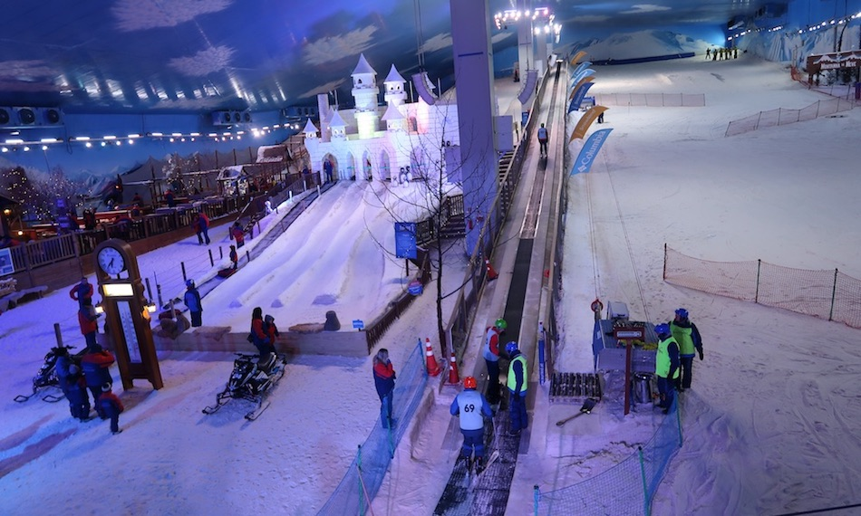
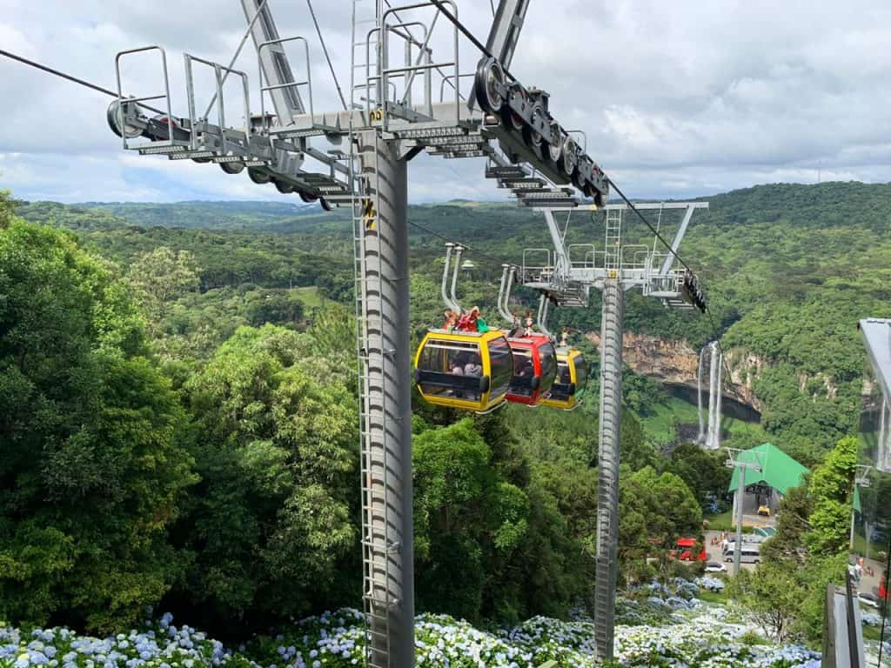
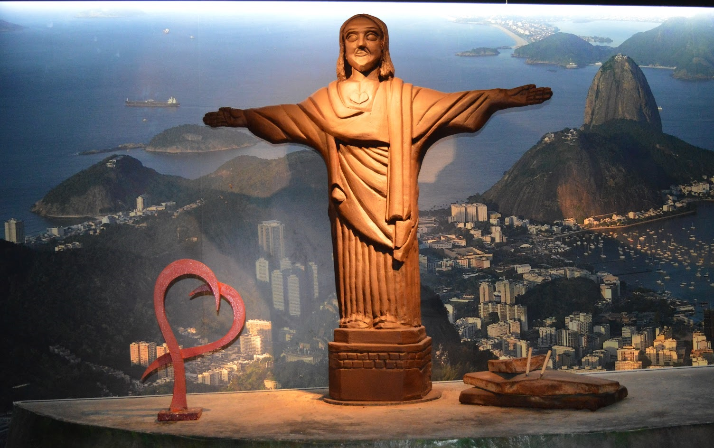

SNOWLAND PARQUE DE NEVE DE GRAMADOA snowland foi o primeiro parque de neve indoor das Américas, inaugurado em 2013, possuindo vários entretenimento para as família, incluindo o Vilarejo Alpino onde simula os alpes suíços, onde você pode esquiar através de um simulador 7D, além disso o parque possui restaurantes e lojas de souvenir nas montanhas cheia de neve a uma temperatura média de -5C°.  |
PARQUE ESTADUAL DO CARACOLO parque cercado pela mãe natureza com mais de 100 hectares na Serra Gaúcha e uma verdadeira imersão na natureza, no parque podemos apreciar os 131 metros de queda d’água da cascata, podendo ser vista do mirante ou do bondinho o qual passa em frente a cascata. Além das inúmeras trilhas que cercam o parque, com a chance de apreciar os animais que habitam aquela região.  |
MUNDO DE CHOCOLATEInaugurado em 2015 o mundo do chocolate é uma atração imperdível, possuindo milhares de esculturas esculpidas de chocolate as quais retratam pontos turísticos do mundo todo, além destas artes feitas em chocolate possui um restaurante e uma loja que vende seus produtos temáticos de todo o mundo.  |